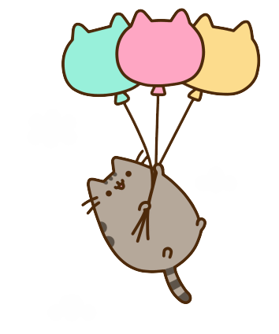

Day 101
Reading
Finish reading The Invisible Man by H.G. Wells.
Writing
Your favorite article of clothing has finally out-lived its life (and then some). It's time to say goodbye, but you love it so much you feel a need to send it off properly. Write a eulogy dedicated to that piece of clothing and all the times you shared together.
Math
Multiplying Decimals Review
- Intro to multiplying decimals: video
- Developing strategies for multiplying decimals: video
- Multiplying decimals - place value: video
- Multiplying challenging decimals: video
- Multiply decimals visually: practice
Words of the Day
Write the two words below in your vocabulary book along with their short definitions. Also, click on the link for each word, and read more about the definition.
- habitation - the act of dwelling in or living permanently in a place
- hasten - move fast
History / Social Studies
- Presidents’ Day is an American holiday celebrated on the third Monday in February. Originally established in 1885 in recognition of President George Washington, it is still officially called "Washington’s Birthday" by the federal government. Traditionally celebrated on February 22— Washington’s actual day of birth— the holiday became popularly known as Presidents’ Day after it was moved as part of 1971’s Uniform Monday Holiday Act, an attempt to create more three-day weekends for the nation’s workers. Although several states still have individual holidays honoring the birthdays of Washington, Abraham Lincoln and other figures, Presidents’ Day is now popularly viewed as a day to celebrate all U.S. presidents past and present.
- Watch this video for an overview.
- Fun family fact: Someone in our family was born on February 12, Abraham Lincoln's birthday!
- You'll be reading this booklet on Abraham Lincoln this week. Read just the Preface today.
Art
Radial Name Drawing

Day 102
Reading
New reading: The Outsiders by S.E. Hinton.
Words of the Day:
Write the two words below in your vocabulary book along with their short definitions. Also, click on the link for each word, and read more about the definition.
Math
Multiplying Decimals Review Continued
- Multiplying decimals like 4x0.6 (standard algorithm): practice
- Multiplying decimals like 2.45x3.6 (standard algorithm): practice
- Multiplying decimals like 0.847x3.54 (standard algorithm): practice
- Multiplying decimals (no standard algorithm): practice
Day 103
Reading
Continue reading The Outsiders by S.E. Hinton.
Words of the Day
Write the three words below in your vocabulary book along with their short definitions. Also, click on the link for each word, and read more about the definition.
Math
- Complete Brain Quest, p. 177: Move It
- Work out these problems in your notebook; there might not be enough room in the worksheet.
- For the longer multiplication problems like 44.12 x 0.312 and 82.97 x 0.456, there is a lot of room for error. Be patient!
Social Studies / History
Continue reading this booklet on Abraham Lincoln.
Day 104
Reading
Continue reading The Outsiders by S.E. Hinton.
Grammar / Vocabulary
Bad vs. Badly – What’s the Difference?
- Bad is an adjective; it is the opposite of good. For example: This food has a bad taste!
- Badly is an adverb. It describes an action that has been carried out poorly. For example: Our team is played badly today, so we lost.
- Read about the difference on this page.
- Rememeber: When you don't feel good, you feel bad (not badly). Read more about this here.
Words of the Day
Write the two words below in your vocabulary book along with their short definitions. Also, click on the link for each word, and read more about the definition.
- imperious - having or showing arrogant superiority
- jabber - talk in a noisy, excited, sometimes incoherent way
Writing
Write a page about the following topic: Everyone’s addicted to something in some shape or form! What are things you can’t go without?
Math
Dividing Decimals
- Dividing whole numbers to get a decimal: video
- Dividing whole numbers like 56÷35 to get a decimal: practice
- Division strategies for decimal quotients: video
- Divide decimals visually: practice
Social Studies / History
Continue reading this booklet on Abraham Lincoln.
Day 105
Reading
Continue reading The Outsiders by S.E. Hinton.
Words of the Day
Write the three words below in your vocabulary book along with their short definitions. Also, click on the link for each word, and read more about the definition.
- jargon - the specialized language used by people in the same work or profession
- jostle - make one's way by pushing or shoving
Math
Dividing Decimals Continued
- Dividing decimals 1: practice
- Dividing decimals 2: practice
- Multi-digit division strategies for decimals: video
- Strategies for dividing by tenths: video
Science
- Outer Space: video.
- What is the Hubble Space Telescope?
- In your science book, read Chapter 20: Stars and Galaxies, pp. 197-216.
- Answer the questions on p. 217, and check your answers against those on p. 219.
- Here are some pictures of galaxies, courtesy of the Hubble Space Telescope! This is my personal favorite.